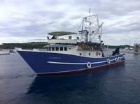
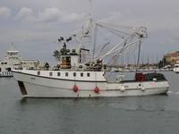
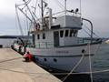
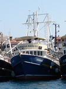
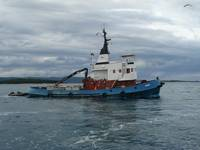
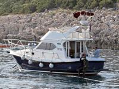

Flota Jadran tune
Flotu Jadran tune čini 12 ribarskih brodova, 2 tegljača i 1 brod hladnjača. Uloga ribarskih brodova je ulov tune u vrijeme kada se tuna lovi, a zatim za vrijeme tova njihova zadaća postaje ulov sitne plave ribe (primarno za ishranu tune u kavezima, ali i za ulov naših ostalih proizvoda: svježe srdele, lokarde i inćuni, te zamrznuti inćuni).
Ribarski brodovi:
| ime broda | dužina | istisnina | izgled broda |
|---|---|---|---|
| Carica | 32 m | 195 BRT |  |
| Tuljan | 26 m | 100 BRT |  |
| Tuljan dva | 32 m | 195 BRT |  |
| Sestrica | 27 m | 140 BRT |  |
| Kali | 24 m | 118 BRT |  |
| Marlin | 31 m | 182 BRT |  |
| Napredak | 25 m | 100 BRT |  |
| Eva | 24 m | 118 BRT |  |
| Haringa | 18 m | 50 BRT |  |
| Jordan | 28 m | 161 BRT |  |
| Stjepan | 28 m | 163 BRT |  |
| Bruno | 29 m | 169 BRT |  |
| Tacoma | 33 m | 180 BRT |  |
{kind=link}
{kind=link}
{kind=link}
{kind=link}
Tegljači:
| ime broda | dužina | istisnina | izgled broda |
|---|---|---|---|
| Cezar | 26 m | 181 BRT |  |
| Trapa | 24 m | 120 BRT |  |
{kind=link}
Hladnjača:
| ime broda | dužina | istisnina | izgled broda |
|---|---|---|---|
| Ledenik | 63 m | 500 BRT |  |
Ostali brodovi
Osim navedenih brodova za održavanje farme i svakodnevni transport radnika, opreme i hrane za tune koristimo niz drugih brodova i čamaca odnosno glisera. Za eventualne intervencije na otvorenom moru koristimo radni brod Calafuria, koji je originalno građen kao brod talijanske pomorske policije.
{kind=link}
Zanimljivo je i da smo kroz godine poslovanja razvili neka vlastita plovila prilagođena upravo radu s tunom (kako u tunolovu, tako i na održavanju kaveza). U početku smo koristili gumene čamce, ali oni su bili preosjetljivi na udarce o bok broda ili rubove kaveza. Zbog toga smo razvili poseban način izrade broda koji ima oblik gumenog čamca (niski bokovi pogodni za rad), ali umjesto osjetljivih gumenih komora koristimo polietilenske cijevi koje su jako otporne na udarce, ubadanja i ostala opterećenja koja mora podnijeti radni brod u ovakvom okruženju.
upravo radu s tunom (kako u tunolovu, tako i na održavanju kaveza). U početku smo koristili gumene čamce, ali oni su bili preosjetljivi na udarce o bok broda ili rubove kaveza. Zbog toga smo razvili poseban način izrade broda koji ima oblik gumenog čamca (niski bokovi pogodni za rad), ali umjesto osjetljivih gumenih komora koristimo polietilenske cijevi koje su jako otporne na udarce, ubadanja i ostala opterećenja koja mora podnijeti radni brod u ovakvom okruženju.